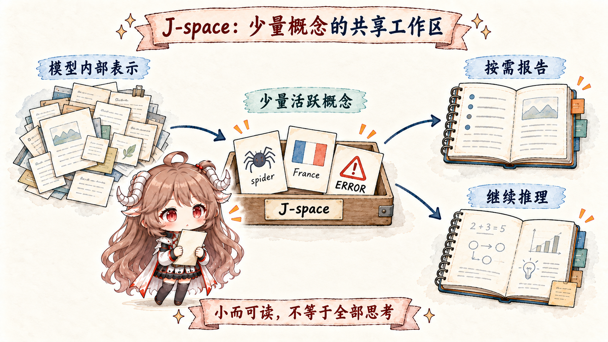

模型内部 · 五篇路线
从 Activation 走到 Agent 行为
Agent 改了一个文件，并不等于“模型直接动了磁盘”。这组文章按时间顺序分开 weights、activation、无声与可见推理、tool call、runtime 和环境结果，再讨论哪些内部证据真的支持因果判断。
阅读边界：内部读数是仪器，不是模型的逐字自传。每篇都会区分相关性、干预得到的因果证据和关于“模型在想什么”的解释。

阅读路线
先建立全景，再逐层读出、识别与干预
五篇共用一条保留期修改任务，让每个概念都落到输入、状态、工具调用与文件结果上。
01 · 全景从 Activation 到 Agent 行为建立 weights、activation、reasoning、tool call、runtime 与 environment 的完整时间线。
阅读第一篇 →
02 · WorkspaceJ-space 与 Silent Reasoning看一小组可读写方向怎样形成 workspace-like 表征，并用 swap 与 ablation 接近因果证据。
阅读第二篇 → 03 · Readout推理可观测性与 Faithfulness
03 · Readout推理可观测性与 Faithfulness比较可见 CoT、NLA、SAE 与潜在推理，各自能看见什么、又会漏掉什么。
阅读第三篇 → 04 · IdentityPersona Vectors 与 Self-model
04 · IdentityPersona Vectors 与 Self-model分开训练出的能力、部署时默认角色与本轮上下文里的临时行为。
阅读第四篇 → 05 · InterventionActivation Steering 与 Alignment Auditing
05 · InterventionActivation Steering 与 Alignment Auditing区分推理时干预、权重训练和部署后审计，并为每种变化设置验证与回滚条件。
阅读第五篇 →